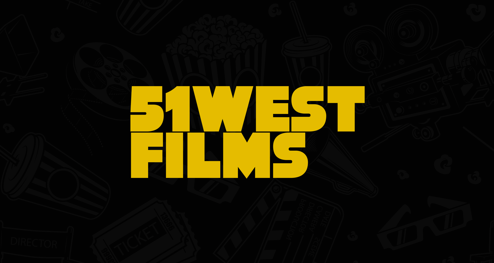
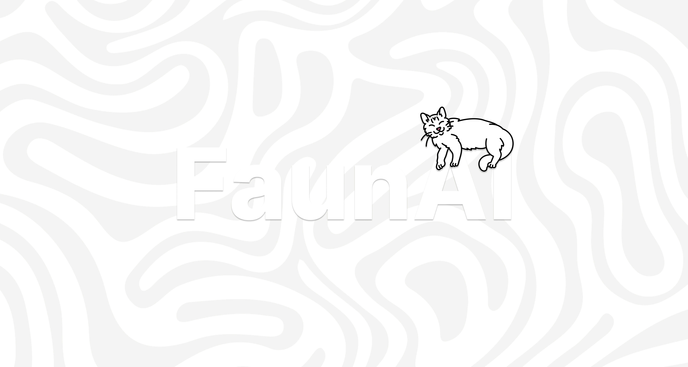

Work
-

HTML / CSS / Wordpress51WESTFILMS
51WESTFILMS needed website from scratch, it started with a simple WordPress project during my studies. After graduating, I redeveloped it into a fully custom-coded website
View project → -

Figma / Prototyping / ResearchGraduation Project - CMD
The graduation project focused on AI transparency, creating a generative AI assistant that adapts to prompt quality and encourages more informed use within digital environments
View project → -
 Social Innovation / Co-creation / Prototyping/ Phases
Social Innovation / Co-creation / Prototyping/ PhasesDigital Society School
Creating a co-creation toolkit with multidisciplinary group of people to make problem-solving accessible across all groups and cultures around the world
View project → -
Figma
Project Title
View project →
About
CMD graduate with a passion for web design, focused on creating intuitive and visually engaging digital experiences. I’m capable of designing, prototyping, and building websites, working comfortably across both design and development. I adapt try my approach depending on the project, always aiming for usability and a strong visual identity.
Outside of the digital I enjoy working on other projects too — design is everywhere, not just on a screen.
Always building. Always learning.
Get in touch →